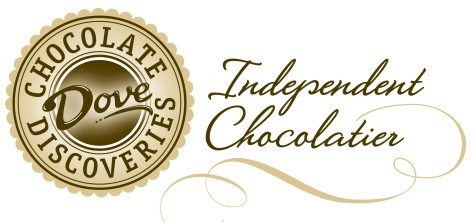

Historia
Surgido de las icónicas barras de chocolate Mars, Dove se ha convertido en un sinónimo de suavidad y placer. Sus inicios se remontan a un momento en el que la industria chocolatera buscaba reinventarse, ofreciendo experiencias más cremosas y deliciosas. Con esta visión, Dove se posicionó como una marca que no solo satisfacía el antojo de chocolate, sino que también proporcionaba un momento de cuidado personal. A lo largo de los años, Dove ha evolucionado, incorporando ingredientes de alta calidad y diversas variedades para adaptarse a los gustos de un público cada vez más exigente. Desde sus icónicas barras hasta sus cremosas trufas y deliciosas opciones sin azúcar, Dove ha demostrado su compromiso con la innovación y la búsqueda de la perfección en cada bocado, convirtiéndose en una marca querida a nivel mundial y un referente en la industria del chocolate.
La búsqueda constante de la perfección ha sido una característica distintiva de Dove Chocolate. La introducción de su icónica textura cremosa, lograda a través de una cuidadosa selección de ingredientes y un proceso de elaboración único, revolucionó la industria chocolatera. Además, Dove ha sido pionera en la creación de sabores innovadores y combinaciones inesperadas, como el chocolate con almendras y maracuyá, que han cautivado a los paladares más exigentes.
Con su constante evolución y adaptación a las nuevas tendencias, Dove sigue siendo un referente en el mercado del chocolate. Su futuro se vislumbra prometedor, con nuevas propuestas que satisfarán los paladares más exigentes y seguirán consolidando su posición como una marca icónica.
